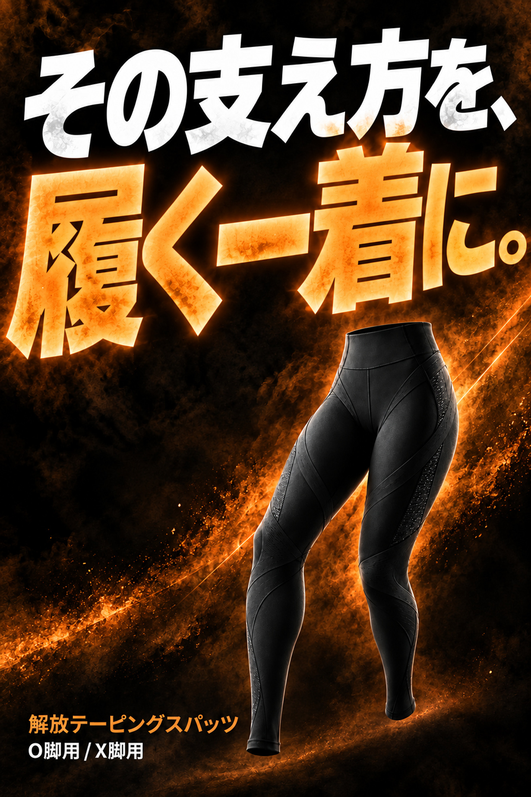
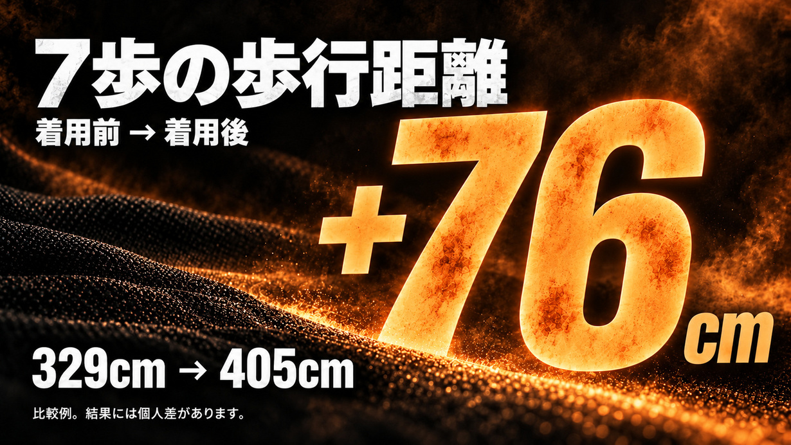
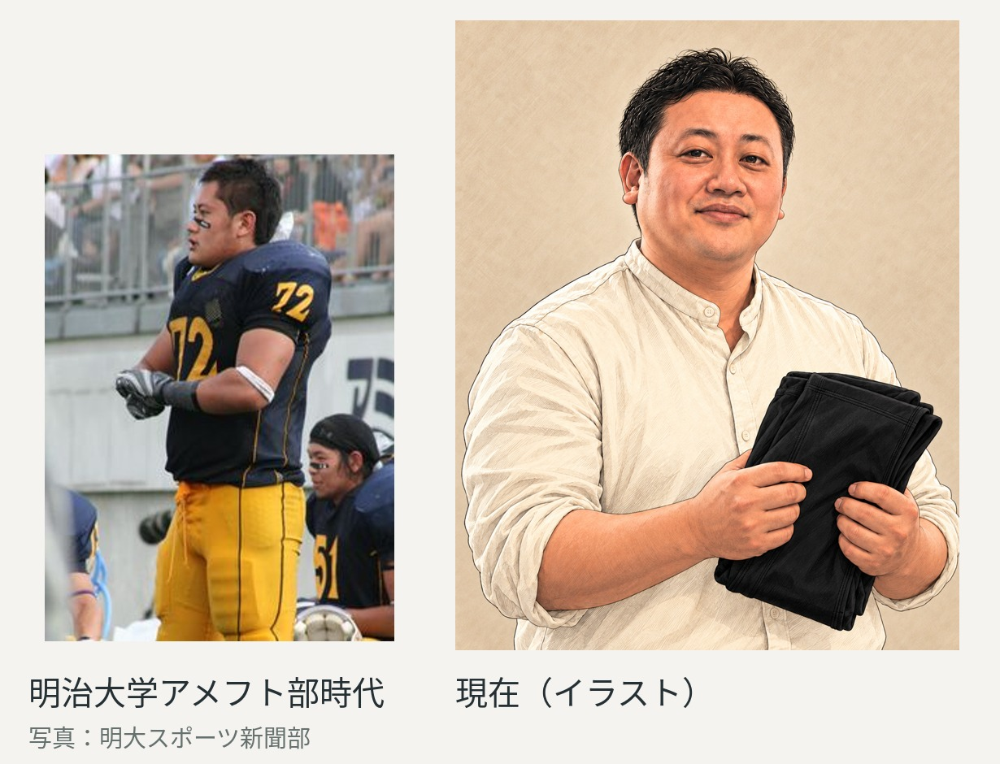
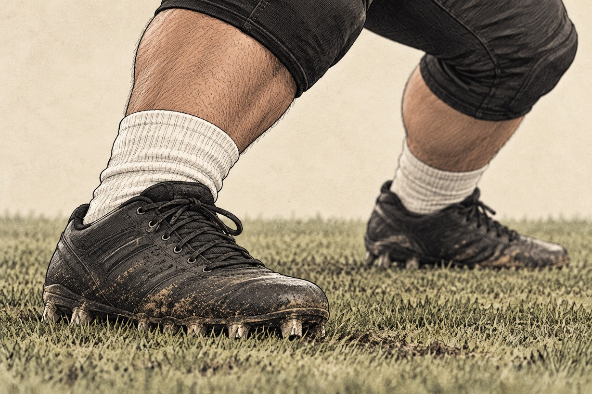
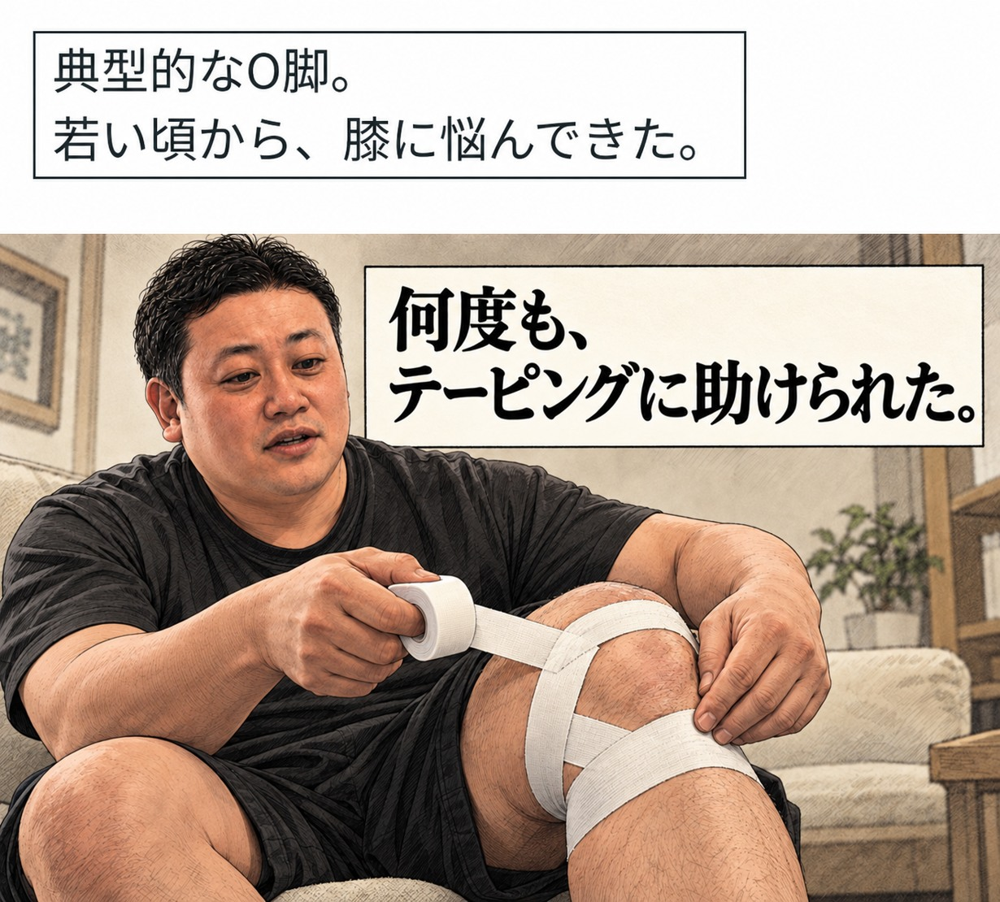
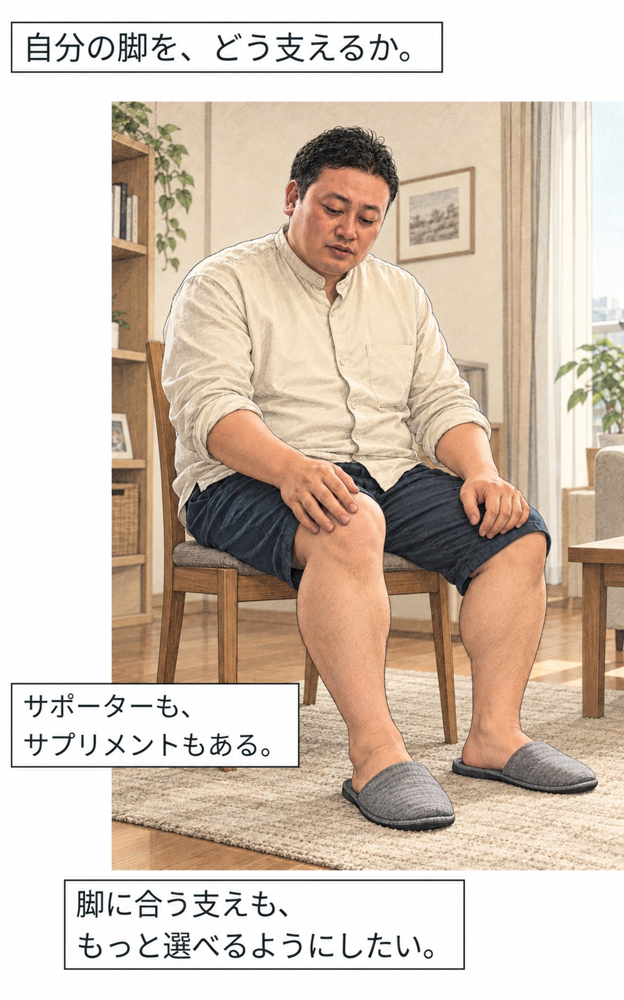
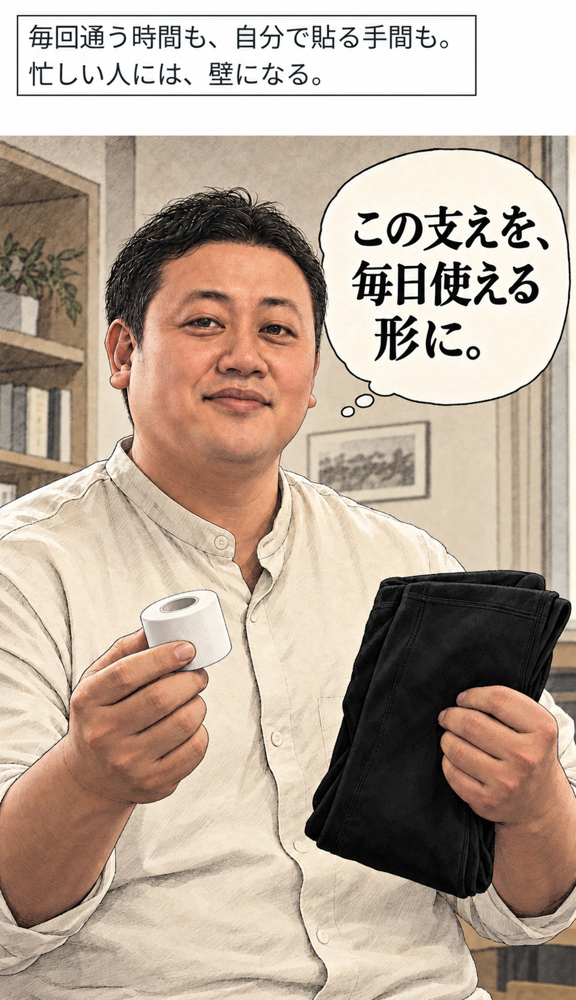
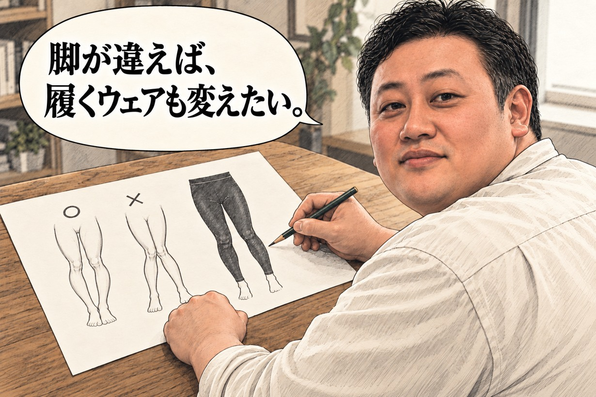
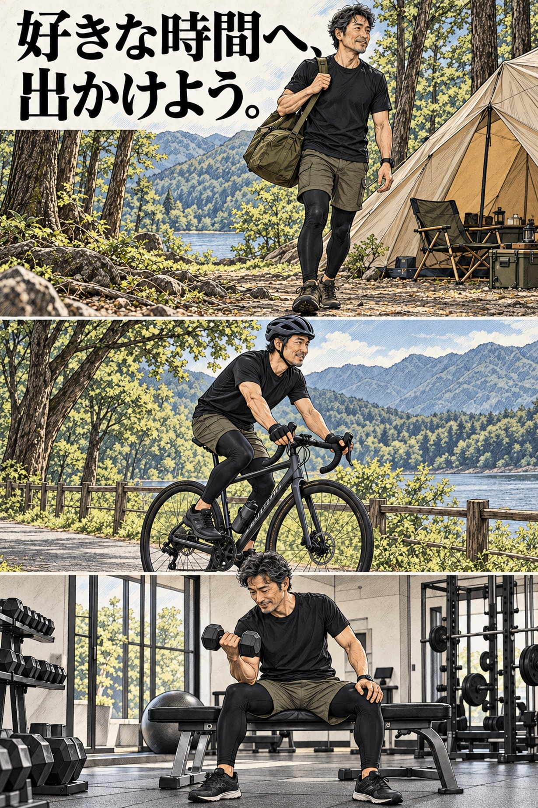
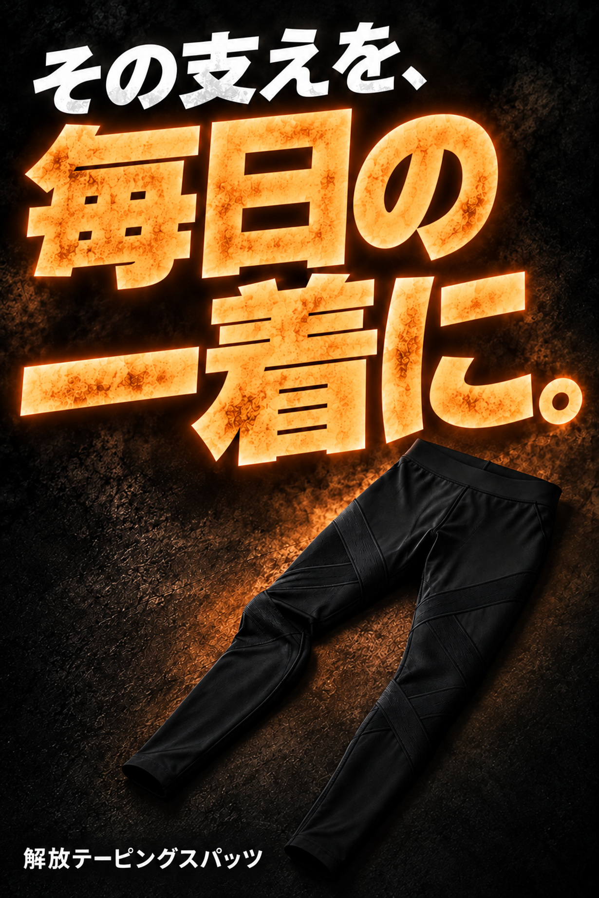

脚の形や動きに合わせて、
支え方も変わります。
競技や施術の現場では、一人ひとりの脚に合わせてテーピングを行います。


でも、毎日の生活で
続けるとなると…




O脚用とX脚用、それぞれの脚の形に合わせたテーピング設計。膝まわりだけでなく、脚全体を支えます。
段階着圧と吸水速乾を、一着に。いつもの服の下に履いて、普段使いにも運動にも。

大宮名倉堂接骨院代表。日本オリンピック委員会（JOC）医科学強化スタッフとして、日本代表チームなどをサポートしてきました。
2026年度はスカッシュ日本代表の強化スタッフ（トレーナー）としても活動。その手技を求め、遠方から来院する方も多い宮内氏の知見を、脚の形に合わせた設計に生かしました。

別の比較例では、7歩の歩行距離が482cmから569cmへ。87cmの差が見られました。前屈・立ち姿・脚のラインも、着用前後で比較しました。
結果には個人差があります。


実際にご使用いただいた方の声
※事前モニター


個人の感想です。結果には個人差があります。人物はイメージです。
テーピングに助けられた。
今度は、届けたい。

昔から、身体を動かすことが好きでした。明治大学のアメリカンフットボール部ではラインマンとしてプレー。相手とぶつかり合い、足を踏ん張る毎日でした。





柔道整復師・宮内政人さんの監修のもと、O脚用とX脚用を製品化しました。スポーツも、休日の外出も、これから楽しみたいことがある。自分に合った支えを、もっと手軽に選べるようにしたい。そのための一着を、KAIHOUzから届けます。
一部の場面はイメージです。
履いて、整えて、出かけよう。


爪を立てず、少しずつ引き上げてください。使用時は取扱説明に従ってください。


タイプの判断に迷う場合は、専門家へご相談ください。
リターンを選ぶ
O脚用・X脚用、それぞれ男性用・女性用から。

解放テーピングスパッツ 1枚セット
送料・手数料込み11,220円
送料990円＋手数料330円
O脚用 ／ X脚用
男性用 ／ 女性用

解放テーピングスパッツ 2枚セット
送料・手数料込み16,170円
送料990円＋手数料330円
O脚用 ／ X脚用
男性用 ／ 女性用

解放テーピングスパッツ 3枚セット
送料・手数料込み21,120円
送料990円＋手数料330円
O脚用 ／ X脚用
男性用 ／ 女性用
単品価格で同じ枚数を購入する場合に比べ、2枚セットは4,950円、3枚セットは9,900円お得です。
